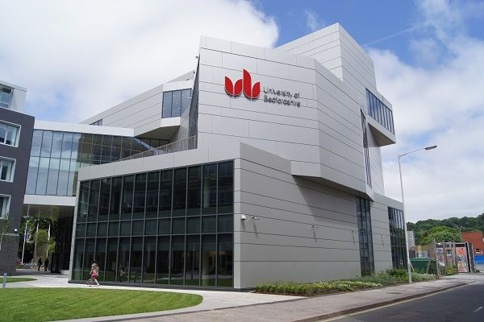

University of bedfordshire
University of bedfordshire is one of Canada’s top post-secondary institutions. Located in historic Niagara region, Brock offers all the benefits of a young and modern university in a safe, community-minded city with beautiful natural surroundings.
| UNIVERSITY OF BEDFORDSHIRE | ||||
| Luton | ||||
| Bedford | ||||
| Aylesbury | ||||
| Milton Keynes | ||||
| Putteridge Bury | ||||
| INTAKES | ||||
| September, January, May | ||||
| Program | Credential | Intake | Campus | Duration |
| Accounting and Business Finance MSc | Post - Graduate | April, August, June, November, October | University Square Campus, Luton | 1 Year |
| Accounting and Business Finance with Data Analytics MSc | Post - Graduate | April, August, June, November, October | University Square Campus, Luton | 2 Years |
| Accounting and Finance BSc (Hons) | Advanced Diploma | February, October | University Square Campus, Luton | 3 Years |
| Accounting BA (Hons) | Advanced Diploma | February, October | University Square Campus, Luton | 3 Years |
| Acting BA (Hons) | Advanced Diploma | October | Bedford Campus | 3 Years |
| Adult Nursing BSc (Hons) | Advanced Diploma | January | University Square Campus, Luton | 3 Years |
| Adult Nursing BSc (Hons) | Advanced Diploma | October | Bedford Campus | 3 Years |
| Adult Nursing MSc | Post - Graduate | February | University Square Campus, Luton | 2 Years |
| Advanced Clinical Practice (Midwifery) MSc | Post - Graduate | February, October | University Square Campus, Luton | 3 Years |
| Advanced Clinical Practice (Nursing) MSc | Post - Graduate | February, October | University Square Campus, Luton | 3 Years |
| Advanced Clinical Practice (Paramedic Science) MSc | Post - Graduate | February, October | University Square Campus, Luton | 3 Years |
| Agricultural Science (Top Up) Bedford College Shuttleworth BSc (Hons) | Certificate or diploma (with additional specialty) | October | Bedford College | 1 Year |
| Agriculture FdSc | Diploma | October | Bedford College | 2 Years |
| Animal Science (Top Up) Bedford College BSc (Hons) | Certificate or diploma (with additional specialty) | October | Bedford College | 1 Year |
| Animation BA (Hons) | Advanced Diploma | February, October | University Square Campus, Luton | 3 Years |
| Applied Computing and Information Technology (15 months) MSc | Post - Graduate | November, October | University Square Campus, Luton | 15 Months |
| Applied Computing and Information Technology MSc | Post - Graduate | April, August, February, June, November, October | University Square Campus, Luton | 1 Year |
| Applied Computing and Information Technology with Project Management MSc | Post - Graduate | August, January, June, November, October | University Square Campus, Luton | 2 Years |
| Applied Early Years Studies (Top up) BA (Hons) | Diploma | October | University of Bedfordshire, Milton Keynes | 2 Years |
| Applied Early Years Studies (Top up) BA (Hons) | Certificate or diploma (with additional specialty) | October | University of Bedfordshire, Milton Keynes | 1 Year |
| Applied Early Years Studies (Top up) BA (Hons) | Certificate or diploma (with additional specialty) | October | Bedford Campus | 1 Year |
| Applied Education Studies (Daytime Delivery) Luton BA (Hons) | Bachelor Degree | October | University Square Campus, Luton | 4 Years |
| Applied Education Studies (Evening Delivery) Luton BA (Hons) | Bachelor Degree | October | University Square Campus, Luton | 4 Years |
| Applied Education Studies BA (Hons) | Bachelor Degree | September | Putteridge Bury Campus, Luton | 4 Years |
| Applied Education Studies BA (Hons) | Bachelor Degree | October | Bedford Campus | 4 Years |
| Applied Education Studies BA (Hons) | Bachelor Degree | October | Arthur Mellows Village College (Study Centre) | 4 Years |
| Applied Linguistics (TEFL) MA | Post - Graduate | February, October | Bedford Campus | 1 Year |
| Applied Linguistics (TEFL) MA | Post - Graduate | February, October | Bedford Campus | 2 Years |
| Applied Linguistics MA | Post - Graduate | February, October | Bedford Campus | 1 Year |
| Applied Personal Training and Specialist Exercise Instruction BSc (Hons) | Certificate or diploma (with additional specialty) | October | Bedford Campus | 1 Year |
| Applied Psychology (Conversion) MSc | Post - Graduate | October | University Square Campus, Luton | 1 Year |
| Applied Social Work Practice: Children and Families MA | Post - Graduate | October | Putteridge Bury Campus, Luton | 5 Years |
| Applied Social Work Practice: Leadership and Management MA | Post - Graduate | October | Putteridge Bury Campus, Luton | 5 Years |
| Applied Social Work: Practice Education MA | Post - Graduate | October | Putteridge Bury Campus, Luton | 5 Years |
| Applied Special Educational Needs and Disability (Top up) BA (Hons) | Certificate or diploma (with additional specialty) | October | Bedford Campus | 1 Year |
| Applied Sport and Physical Education BSc (Hons) | Certificate or diploma (with additional specialty) | October | Bedford Campus | 1 Year |
| Applied Sport Science and Coaching BSc (Hons) | Certificate or diploma (with additional specialty) | October | Bedford Campus | 1 Year |
| Art and Design BA (Hons) | Advanced Diploma | February, October | University Square Campus, Luton | 3 Years |
| Art and Design MA | Post - Graduate | February, October | University Square Campus, Luton | 1 Year |
| Art and Design with Data Analytics MA | Post - Graduate | February, October | University Square Campus, Luton | 2 Years |
| Art and Design with Project Management MA | Post - Graduate | February, October | University Square Campus, Luton | 2 Years |
| Artificial Intelligence and Robotics BSc (Hons) | Advanced Diploma | February, October | University Square Campus, Luton | 3 Years |
| Automotive Engineering BEng (Hons) | Advanced Diploma | February, October | University Square Campus, Luton | 3 Years |
| Automotive Engineering for Electric Vehicles MSc | Post - Graduate | April, August, June, November, October | University Square Campus, Luton | 2 Years |
| Aviation and Airport Management BSc (Hons) | Advanced Diploma | February, October | University Square Campus, Luton | 3 Years |
| Bedfordshire International and EU Foundation Year | Certificate or diploma (with additional specialty) | February, October, September | University Square Campus, Luton | 1 Year |
| Behavioural Issues in Schools PgCert | Post - Graduate | February, October | Distance Learning | 1 Year |
| Biochemistry BSc (Hons) | Advanced Diploma | February, October | University Square Campus, Luton | 3 Years |
| Biomedical Engineering MSc | Post - Graduate | October | University Square Campus, Luton | 1 Year |
| Biotechnology (15 month) MSc | Post - Graduate | February, October | University Square Campus, Luton | 15 Months |
| Biotechnology with Data Analytics MSc | Post - Graduate | February, October | University Square Campus, Luton | 2 Years |
| Biotechnology with Project Management MSc | Post - Graduate | February, October | University Square Campus, Luton | 2 Years |
| Building Services and Sustainability FD | Diploma | October | Bedford College | 2 Years |
| Building Technology FdSc | Diploma | October | University Square Campus, Luton | 2 Years |
| Business Administration (Digital Technology Management) MBA | Post - Graduate | April, August, June, November, October | University Square Campus, Luton | 1 Year |
| Business Administration (Executive) MBA | Post - Graduate | October | University Square Campus, Luton | 2 Years |
| Business Administration (Finance) MBA | Post - Graduate | April, August, June, November, October | University Square Campus, Luton | 1 Year |
| Business Administration (Hospital and Health Services Management) MBA | Post - Graduate | April, August, June, November, October | University Square Campus, Luton | 1 Year |
| Business Administration (Human Resource Management) MBA | Post - Graduate | April, August, June, November, October | University Square Campus, Luton | 1 Year |
| Business Administration (Internship) MBA | Post - Graduate | April, August, June, November, October | University Square Campus, Luton | 15 Months |
| Business Administration (Logistics and Supply Chain Management) MBA | Post - Graduate | April, August, June, November, October | University Square Campus, Luton | 1 Year |
| Business Administration (Marketing) MBA | Post - Graduate | April, August, June, November, October | University Square Campus, Luton | 1 Year |
| Business Administration (Oil and Gas Management) MBA | Post - Graduate | April, August, June, November, October | University Square Campus, Luton | 1 Year |
| Business Administration (Top up) BA (Hons) | Certificate or diploma (with additional specialty) | February, October | University Square Campus, Luton | 1 Year |
| Business Administration MBA | Post - Graduate | April, August, June, November, October | University Square Campus, Luton | 1 Year |
| Business Administration with Data Analytics MBA | Post - Graduate | April, August, June, November, October | University Square Campus, Luton | 2 Years |
| Business and Management (Top up) BA (Hons) | Certificate or diploma (with additional specialty) | October | Oldham College Study Centre | 1 Year |
| Business Economics BSc (Hons) | Advanced Diploma | February, October | University Square Campus, Luton | 3 Years |
| Business Information Systems BSc (Hons) | Advanced Diploma | February, October | University Square Campus, Luton | 3 Years |
| Business Management (with Placement) BSc (Hons) | Advanced Diploma | October | University of Bedfordshire, Milton Keynes | 3 Years |
| Business Management BSc (Hons) | Advanced Diploma | October | University of Bedfordshire, Milton Keynes | 3 Years |
| Business Management BSc (Hons) | Advanced Diploma | February, October | Bedford Campus | 3 Years |
| Business Management FdA | Advanced Diploma | October | University of Bedfordshire, Milton Keynes | 3 Years |
| Business Management with Law BSc (Hons) | Advanced Diploma | February, October | Bedford Campus | 3 Years |
| Business Studies (General) BSc (Hons) | Advanced Diploma | February, October | University Square Campus, Luton | 3 Years |
| Business Studies (International) BSc (Hons) | Advanced Diploma | February, October | University Square Campus, Luton | 3 Years |
| Business Studies (Project Management) BSc (Hons) | Advanced Diploma | February, October | University Square Campus, Luton | 3 Years |
| Business Studies with Finance BSc (Hons) | Advanced Diploma | February, October | University Square Campus, Luton | 3 Years |
| Business Studies with Marketing BSc (Hons) | Advanced Diploma | February, October | University Square Campus, Luton | 3 Years |
| Child and Adolescent Studies BA (Hons) | Advanced Diploma | February, October | University Square Campus, Luton | 3 Years |
| Child and Family Studies FD | Diploma | October | Central Bedfordshire College | 2 Years |
| Child and Family Studies FD | Diploma | October | Bedford College | 2 Years |
| Child and Family Studies FD | Diploma | October | Barnfield College | 2 Years |
| Childhood and Youth: Applied Perspectives MA | Post - Graduate | October | University Square Campus, Luton | 1 Year |
| Children and Young People’s Nursing BSc (Hons) | Advanced Diploma | October | Bedford Campus | 3 Years |
| Children and Young People’s Nursing MSc | Post - Graduate | February | University Square Campus, Luton | 2 Years |
| Clinical Exercise Physiology MSc | Post - Graduate | October | Bedford Campus | 1 Year |
| Clinical Exercise Science BSc (Hons) | Advanced Diploma | October | Bedford Campus | 3 Years |
| Clinical Exercise Therapy BSc (Hons) | Advanced Diploma | October | Bedford Campus | 3 Years |
| Computer Animation and Visual Effects BSc (Hons) | Advanced Diploma | February, October | University Square Campus, Luton | 3 Years |
| Computer Games Development BSc (Hons) | Advanced Diploma | February, October | University Square Campus, Luton | 3 Years |
| Computer Networking BSc (Hons) | Advanced Diploma | February, October | University Square Campus, Luton | 3 Years |
| Computer Networking MSc | Post - Graduate | March, October | University Square Campus, Luton | 1 Year |
| Computer Networking with Project Management MSc | Post - Graduate | April, August, June, November, October | University Square Campus, Luton | 2 Years |
| Computer Science BSc (Hons) | Advanced Diploma | October | University Square Campus, Luton | 3 Years |
| Computer Science MSc | Post - Graduate | April, August, June, November, October | University Square Campus, Luton | 1 Year |
| Computer Science MSc | Post - Graduate | April, August, February, June, November, October | University Square Campus, Luton | 1 Year |
| Computer Science with placement (22 months) MSc | Post - Graduate | October | University Square Campus, Luton | 22 Months |
| Computer Science with placement MSc | Post - Graduate | October | University Square Campus, Luton | 21 Months |
| Computer Science with Project Management MSc | Post - Graduate | April, August, June, November, October | University Square Campus, Luton | 2 Years |
| Construction Management (Top up) BSc (Hons) | Certificate or diploma (with additional specialty) | October | University Square Campus, Luton | 1 Year |
| Construction Management FdSc | Diploma | October | University Square Campus, Luton | 2 Years |
| Creative Digital Film Production MA | Post - Graduate | February, October | University Square Campus, Luton | 15 Months |
| Creative Writing and Journalism BA (Hons) | Advanced Diploma | October | University Square Campus, Luton | 3 Years |
| Creative Writing BA (Hons) | Advanced Diploma | October | University Square Campus, Luton | 3 Years |
| Criminology and Sociology BA (Hons) | Advanced Diploma | February, October | University Square Campus, Luton | 3 Years |
| Criminology BA (Hons) | Advanced Diploma | February, October | University Square Campus, Luton | 3 Years |
| Criminology MA | Post - Graduate | October | University Square Campus, Luton | 1 Year |
| Cyber Security MSc | Post - Graduate | October | University Square Campus, Luton | 2 Years |
| Cyber Security with Project Management MSc | Post - Graduate | April, August, June, November, October | University Square Campus, Luton | 2 Years |
| Cybersecurity BSc (Hons) | Advanced Diploma | February, October | University Square Campus, Luton | 3 Years |
| Cybersecurity BSc (Hons) | Bachelor Degree | February, October | University Square Campus, Luton | 4 Years |
| Dance and Professional Practice BA (Hons) | Advanced Diploma | October | Bedford Campus | 3 Years |
| Dance Performance and Choreography MA | Post - Graduate | October | Bedford Campus | 1 Year |
| Dental Education BA (Hons) | Post - Graduate | February, October | Putteridge Bury Campus, Luton | 1 Year |
| Dental Education MA | Post - Graduate | October | Putteridge Bury Campus, Luton | 3 Years |
| Dental Education MA | Post - Graduate | October | Putteridge Bury Campus, Luton | 3 Years |
| Dental Law and Ethics MA | Post - Graduate | October | Putteridge Bury Campus, Luton | 3 Years |
| Dental Law and Ethics PgCert | Post - Graduate | October | Putteridge Bury Campus, Luton | 1 Year |
| Difficulties in Literacy Development and Dyslexia BA (Hons) | Post - Graduate | October | Distance Learning | 1 Year |
| Digital Marketing MSc | Post - Graduate | April, August, June, November, October | University Square Campus, Luton | 1 Year |
| Early Childhood Education (Graduate Practitioner) BA (Hons) | Advanced Diploma | February, October | Bedford Campus | 3 Years |
| Early Childhood Education (with Early Years Educator Status) BA (Hons) | Advanced Diploma | February, October | Putteridge Bury Campus, Luton | 3 Years |
| Early Years (Birth to 5) (with EYTS) PGCE | Post - Graduate | September | Bedford Campus | 1 Year |
| Early Years and English Language Teaching BA (Hons) | Advanced Diploma | October | Bedford Campus | 3 Years |
| Early Years Education BA (Hons) | Advanced Diploma | October | Bedford Campus | 3 Years |
| Early Years Studies FdA | Diploma | October | Bedford Campus | 2 Years |
| Early Years Teaching (with recommendation for EYTS) Pen Green | Certificate or diploma (with additional specialty) | September | Pen Green Research Base | 1 Year |
| Economics and Finance BSc (Hons) | Advanced Diploma | February, October | University Square Campus, Luton | 3 Years |
| Education (Early Years) MA | Post - Graduate | February, October | Bedford Campus | 3 Years |
| Education (Leadership) | Post - Graduate | February, October | Bedford Campus | 1 Year |
| Education (Leadership) MA | Post - Graduate | February, October | Bedford Campus | 3 Years |
| Education (National Award for Special Educational Needs Co-ordination) Distance Learning PgCert | Post - Graduate | October | Distance Learning | 1 Year |
| Education (National Award for Special Educational Needs Co-ordination) PgCert | Post - Graduate | October | Bedford Campus | 1 Year |
| Education (Practice) MA | Post - Graduate | February, October | Bedford Campus | 3 Years |
| Education (Social Justice) MA | Post - Graduate | February, October | Bedford Campus | 1 Year |
| Education (Special Educational Needs) MA | Post - Graduate | October | Bedford Campus | 3 Years |
| Education and Sociology BA (Hons) | Advanced Diploma | October | Bedford Campus | 3 Years |
| Education BA (Hons) | Advanced Diploma | October | Bedford Campus | 3 Years |
| Education MA | Post - Graduate | February, October | Bedford Campus | 1 Year |
| Education Studies and English BA (Hons) | Advanced Diploma | October | Bedford Campus | 3 Years |
| Education with Psychology BA (Hons) | Advanced Diploma | February, October | Bedford Campus | 3 Years |
| Educational Practice FD | Advanced Diploma | September | Central Bedfordshire College | 3 Years |
| Educational Practice FD | Advanced Diploma | September | Bedford College | 3 Years |
| Educational Practice FD | Advanced Diploma | October | Aylesbury | 3 Years |
| Electronic Engineering BEng (Hons) | Advanced Diploma | February, October | University Square Campus, Luton | 3 Years |
| Electronic Engineering MSc | Post - Graduate | February, October | University Square Campus, Luton | 1 Year |
| Electronic Engineering with placement (22 months) MSc | Post - Graduate | February | University Square Campus, Luton | 22 Months |
| Electronic Engineering with placement MSc | Post - Graduate | October | University Square Campus, Luton | 21 Months |
| Electronic Engineering with Project Management MSc | Post - Graduate | April, August, June, November, October | University Square Campus, Luton | 2 Years |
| English Language and Linguistics BA (Hons) | Advanced Diploma | October | Bedford Campus | 3 Years |
| English Language and Teaching English as a Foreign Language BA (Hons) | Advanced Diploma | October | Bedford Campus | 3 Years |
| English Language Teaching | Certificate or diploma (with additional specialty) | October | Bedford Campus | 4 Weeks |
| English Language Teaching (Leadership and Management) MA | Post - Graduate | October | Bedford Campus | 1 Year |
| English Literature BA (Hons) | Advanced Diploma | October | Bedford Campus | 3 Years |
| English Literature MA | Post - Graduate | October | Bedford Campus | 1 Year |
| Environmental Health Science BSc (Hons) | Advanced Diploma | February, October | University Square Campus, Luton | 3 Years |
| Environmental Management (15 months) MSc | Post - Graduate | February, October | University Square Campus, Luton | 15 Months |
| Environmental Management MSc | Post - Graduate | October | University Square Campus, Luton | 1 Year |
| Events Management BSc(Hons) | Advanced Diploma | February, October | University Square Campus, Luton | 3 Years |
| Events Management MSc | Post - Graduate | April, August, June, November, October | University Square Campus, Luton | 1 Year |
| Executive Masters in Business Administration MBA | Post - Graduate | October | University Square Campus, Luton | 2 Years |
| Family and Systemic Psychotherapy MSc | Post - Graduate | October | Institute of Family Therapy, London | 2 Years |
| Fashion Design BA (Hons) | Advanced Diploma | February, October | University Square Campus, Luton | 3 Years |
| Film and Television Production BA (Hons) | Advanced Diploma | February, October | University Square Campus, Luton | 3 Years |
| Film Production BA (Hons) | Advanced Diploma | February, October | University Square Campus, Luton | 3 Years |
| Financial Economics MSc | Post - Graduate | April, August, June, November, October | University Square Campus, Luton | 1 Year |
| Financial Risk Management MSc | Post - Graduate | April, August, June, November, October | University Square Campus, Luton | 1 Year |
| First Certificate in English (FCE) | Certificate or diploma (with additional specialty) | February, October | University Square Campus, Luton | 1 Year |
| Food and Nutrition Science BSc (Hons) | Advanced Diploma | February, October | University Square Campus, Luton | 3 Years |
| Food Science, Technology and Management BSc (Hons) | Bachelor Degree | October | University Square Campus, Luton | 4 Years |
| Food Security in Public Health MSc | Post - Graduate | February, October | University Square Campus, Luton | 1 Year |
| Football Business BA (Hons) | Advanced Diploma | October | Bedford Campus | 3 Years |
| Football Coaching BA (Hons) | Advanced Diploma | October | Bedford Campus | 3 Years |
| Football Development BA (Hons) | Advanced Diploma | October | Bedford Campus | 3 Years |
| Football Science BSc (Hons) | Advanced Diploma | October | Bedford Campus | 3 Years |
| Football Studies BA (Hons) | Advanced Diploma | February, October | Bedford Campus | 3 Years |
| Forensic Analysis MSc | Post - Graduate | February, October | University Square Campus, Luton | 1 Year |
| Forensic Psychology MSc | Post - Graduate | October | University Square Campus, Luton | 1 Year |
| Forensic Science and Criminology BSc (Hons) | Advanced Diploma | February, October | University Square Campus, Luton | 3 Years |
| Forensic Science BSc (Hons) | Advanced Diploma | February, October | University Square Campus, Luton | 3 Years |
| Graphic Design BA (Hons) | Advanced Diploma | February, October | University Square Campus, Luton | 3 Years |
| Health and Social Care BA (Hons) | Advanced Diploma | February, October | University Square Campus, Luton | 3 Years |
| Health and Social Care Practice FdA | Diploma | October | Bedford College - Tresham | 2 Years |
| Health and Social Care Practice FdA | Diploma | October | Central Bedfordshire College | 2 Years |
| Health Care Practice (Top up) BSc (Hons) | Certificate or diploma (with additional specialty) | February, October | University Square Campus, Luton | 1 Year |
| Health Psychology BSc (Hons) | Advanced Diploma | October | University Square Campus, Luton | 3 Years |
| Health Psychology MSc | Post - Graduate | October | University Square Campus, Luton | 1 Year |
| Health, Nutrition and Exercise BSc (Hons) | Advanced Diploma | October | Bedford Campus | 3 Years |
| Healthcare Practice FdSc | Diploma | March, September | University Square Campus, Luton | 2 Years |
| Healthcare Science BSc (Hons) | Advanced Diploma | February, October | University Square Campus, Luton | 3 Years |
| Human Bioscience with Enterprise BSc (Hons) | Advanced Diploma | February | University Square Campus, Luton | 3 Years |
| Human Resource Management (with placement) (Accredited) BSc (Hons) | Advanced Diploma | October | University of Bedfordshire, Milton Keynes | 3 Years |
| Human Resource Management (with placement) BSc (Hons) | Advanced Diploma | February, October | University of Bedfordshire, Milton Keynes | 3 Years |
| Human Resource Management BA (Hons) | Advanced Diploma | February, October | University Square Campus, Luton | 3 Years |
| Human Resource Management MSc | Post - Graduate | October | Bedford Campus | 9 Months |
| Human Resource Management PgDip | Post - Graduate | October | Bedford Campus | 2 Years |
| Human Resources Management with Law BSc (Hons) | Advanced Diploma | February, October | University Square Campus, Luton | 3 Years |
| Human Rights and Social Enterprise MA | Post - Graduate | October | University Square Campus, Luton | 1 Year |
| Illustration BA (Hons) | Advanced Diploma | February, October | University Square Campus, Luton | 3 Years |
| Information and Data Systems BSc (Hons) | Advanced Diploma | February, October | University Square Campus, Luton | 3 Years |
| Information Systems Management MSc | Post - Graduate | April, August, June, November, October | University Square Campus, Luton | 1 Year |
| Information Technology BSc (Hons) | Advanced Diploma | February, October | University Square Campus, Luton | 3 Years |
| Interior Architecture BA (Hons) | Advanced Diploma | February, October | University Square Campus, Luton | 3 Years |
| Interior Design BA (Hons) | Advanced Diploma | February, October | University Square Campus, Luton | 3 Years |
| Intermediate Child Focused Systemic Practice PgCert | Post - Graduate | October | Institute of Family Therapy, London | 1 Year |
| Intermediate Systemic Practice with Families and Couples PgCert | Post - Graduate | October | Institute of Family Therapy, London | 1 Year |
| International Business (with Placement) MSc | Post - Graduate | February | University Square Campus, Luton | 2 Years |
| International Business BSc (Hons) | Advanced Diploma | October | University Square Campus, Luton | 3 Years |
| International Business Law LLM | Post - Graduate | April, August, June, November, October | University Square Campus, Luton | 1 Year |
| International Business MSc | Post - Graduate | April, August, June, November, October | University Square Campus, Luton | 1 Year |
| International Business with Aviation Management MSc | Post - Graduate | April, August, February, November, October | University Square Campus, Luton | 1 Year |
| International Business with Data Analytics MSc | Post - Graduate | April, August, June, November, October | University Square Campus, Luton | 2 Years |
| International Business with Law MSc | Post - Graduate | April, August, June, November, October | University Square Campus, Luton | 1 Year |
| International Commercial and Dispute Resolution Law LLM | Post - Graduate | April, August, June, November, October | University Square Campus, Luton | 1 Year |
| International Education (English Language Teaching) MA | Post - Graduate | October | Bedford Campus | 1 Year |
| International Education (Leadership and Administration) MA | Post - Graduate | October | Bedford Campus | 1 Year |
| International Finance and Banking BA (Hons) | Post - Graduate | April, August, February, June, October | University Square Campus, Luton | 1 Year |
| International Finance and Banking BSc (Hons) | Advanced Diploma | October | University Square Campus, Luton | 3 Years |
| International Human Resource Management MSc | Post - Graduate | April, August, June, November, October | University Square Campus, Luton | 1 Year |
| International Journalism MA | Post - Graduate | October | University Square Campus, Luton | 1 Year |
| International Journalism with Data Analytics MA | Post - Graduate | February, October | University Square Campus, Luton | 2 Years |
| International Journalism with Project Management MA | Post - Graduate | February, October | University Square Campus, Luton | 2 Years |
| International Relations Management MSc | Post - Graduate | April, August, June, November, October | University Square Campus, Luton | 1 Year |
| International Social Welfare and Social Development MA | Post - Graduate | October | University Square Campus, Luton | 1 Year |
| International Sport Development BA (Hons) | Advanced Diploma | February, October | Bedford Campus | 3 Years |
| International Tourism Management BSc (Hons) | Advanced Diploma | February, October | University Square Campus, Luton | 3 Years |
| International Tourism Planning and Management MSc | Post - Graduate | April, August, June, November | University Square Campus, Luton | 1 Year |
| International Tourism with Events Management BSc (Hons) | Advanced Diploma | February, October | University Square Campus, Luton | 3 Years |
| International Tourism with Hospitality Management BSc (Hons) | Advanced Diploma | February, October | University Square Campus, Luton | 3 Years |
| Journalism (with placement) Milton Keynes BA (Hons) | Advanced Diploma | October | University of Bedfordshire, Milton Keynes | 3 Years |
| Journalism (with placement) Milton Keynes BA (Hons) | Advanced Diploma | October | University of Bedfordshire, Milton Keynes | 3 Years |
| Journalism BA (Hons) | Advanced Diploma | February, October | University Square Campus, Luton | 3 Years |
| Journalism BA (Hons) | Advanced Diploma | February, October | University Square Campus, Luton | 3 Years |
| Law LLB (Hons) | Advanced Diploma | October | Bedford Campus | 3 Years |
| Law LLB (Hons) | Advanced Diploma | October | University Square Campus, Luton | 3 Years |
| Law with Criminology LLB (Hons) | Advanced Diploma | October | University Square Campus, Luton | 3 Years |
| Law with Financial Management LLB (Hons) | Advanced Diploma | October | University Square Campus, Luton | 3 Years |
| Law with Psychology LLB (Hons) | Advanced Diploma | October | University Square Campus, Luton | 3 Years |
| Management MSc | Post - Graduate | April, August, June, November, October | University Square Campus, Luton | 1 Year |
| Marketing BSc (Hons) | Advanced Diploma | February, October | University Square Campus, Luton | 3 Years |
| Marketing MSc | Post - Graduate | April, August, June, November, October | University Square Campus, Luton | 1 Year |
| Marketing with Aviation and Airport Management BSc (Hons) | Advanced Diploma | February, October | University Square Campus, Luton | 3 Years |
| Marketing with Events Management BSc (Hons) | Advanced Diploma | February, October | University Square Campus, Luton | 3 Years |
| Marketing with International Tourism Management BSc (Hons) | Advanced Diploma | February, October | University Square Campus, Luton | 3 Years |
| Marketing with International Tourism Management BSc (Hons) | Advanced Diploma | February, October | University Square Campus, Luton | 3 Years |
| Mass Communications MA | Post - Graduate | October | University Square Campus, Luton | 1 Year |
| Mass Communications with Data Analytics MA | Post - Graduate | February, October | University Square Campus, Luton | 2 Years |
| Mass Communications with Project Management MA | Post - Graduate | February, October | University Square Campus, Luton | 2 Years |
| Master of Business Administration (Placement) MBA | Post - Graduate | October | University Square Campus, Luton | 2 Years |
| Master of Physical Education (Secondary) (with QTS) MPhysEd | Bachelor Degree | October | Bedford Campus | 4 Years |
| Master of Physical Education (Secondary) (with QTS) MPhysEd | Bachelor Degree | October | Bedford Campus | 4 Years |
| Mechanical Engineering BEng (Hons) | Advanced Diploma | February, October | University Square Campus, Luton | 3 Years |
| Mechanical Engineering MSc | Post - Graduate | April, August, June, November, October | University Square Campus, Luton | 1 Year |
| Media Communications BA (Hons) | Advanced Diploma | October | University Square Campus, Luton | 3 Years |
| Media Make-up and Character Design FdA | Diploma | October | University Square Campus, Luton | 2 Years |
| Media Make-up and Character Design FdA | Diploma | October | Bedford College | 2 Years |
| Media Performance for Film TV and Theatre BA (Hons) | Advanced Diploma | February, October | University Square Campus, Luton | 3 Years |
| Media Production (Bedford College – Tresham) FdA | Diploma | October | Bedford College - Tresham | 2 Years |
| Media Production BA (Hons) | Advanced Diploma | February, October | University Square Campus, Luton | 3 Years |
| Media, Marketing and Public Relations BA (Hons) | Advanced Diploma | February, October | University Square Campus, Luton | 3 Years |
| Medical Education BA (Hons) | Post - Graduate | February, October | Putteridge Bury Campus, Luton | 1 Year |
| Medical Simulation PgCert | Post - Graduate | February | Putteridge Bury Campus, Luton | 1 Year |
| Mental Health Nursing MSc | Diploma | February | University Square Campus, Luton | 2 Years |
| Microbiology in Public Health (15 month) MSc | Post - Graduate | February | University Square Campus, Luton | 2 Years |
| Microbiology in Public Health MSc | Post - Graduate | October | University Square Campus, Luton | 1 Year |
| Midwifery: Registered Midwife (2nd Registration) BSc (Hons) | Diploma | September | University Square Campus, Luton | 2 Years |
| Midwifery: Registered Midwife (3 Year) BSc (Hons) | Advanced Diploma | September | University Square Campus, Luton | 3 Years |
| Music Technology FD | Diploma | October | Bedford College | 2 Years |
| Nursing Associate FD | Diploma | February | University Square Campus, Luton | 2 Years |
| Nursing Associate Practitioner FdSc | Diploma | February, October | Aylesbury | 2 Years |
| Nursing Associate Practitioner FdSc | Diploma | February, October | Bedford Campus | 2 Years |
| Nursing Associate Practitioner FdSc | Diploma | February, October | University Square Campus, Luton | 2 Years |
| Nursing with Registered Nurse Child (September 2017) BSc (Hons) | Advanced Diploma | October | Bedford Campus | 3 Years |
| Operating Department Practice BSc (Hons) | Advanced Diploma | September | University Square Campus, Luton | 3 Years |
| Paramedic Science BSc (Hons) | Advanced Diploma | September | Bedford Campus | 3 Years |
| Performing Arts BA (Hons) | Advanced Diploma | February, October | Bedford Campus | 3 Years |
| PGCE Early Years Birth to 5 (with EYTS) Employment Pathway PGCE | Post - Graduate | September | Bedford Campus | 1 Year |
| Pharmaceutical and Chemical Sciences BSc (Hons) | Advanced Diploma | February, October | University Square Campus, Luton | 3 Years |
| Pharmacology (15 month) MSc | Post - Graduate | February, November | University Square Campus, Luton | 2 Years |
| Pharmacology and Health Science BSc (Hons) | Advanced Diploma | February, October | University Square Campus, Luton | 3 Years |
| Pharmacology MSc | Post - Graduate | October | University Square Campus, Luton | 1 Year |
| Pharmacology with Data Analytics MSc | Post - Graduate | February, October | University Square Campus, Luton | 2 Years |
| Pharmacology with Project Management MSc | Post - Graduate | February, October | University Square Campus, Luton | 2 Years |
| Photography BA (Hons) | Advanced Diploma | February, October | University Square Campus, Luton | 3 Years |
| Physical Activity, Nutrition and Behaviour Change MSc | Post - Graduate | October | Bedford Campus | 1 Year |
| Physical Education and Sport Pedagogy MA | Post - Graduate | October | Bedford Campus | 1 Year |
| Policing and Criminal Investigation BA (Hons) | Advanced Diploma | February, October | University Square Campus, Luton | 3 Years |
| Post Compulsory Education – Professional Graduate Certificate in Education | Post - Graduate | February, October | Bedford Campus | 2 Years |
| Post Compulsory Education – Professional Graduate Certificate in Education | Post - Graduate | February, October | Bedford Campus | 1 Year |
| Post Compulsory Education – Professional Graduate Certificate in Education | Post - Graduate | February, October | Bedford Campus | 1 Year |
| Post Compulsory Education – Professional Graduate Certificate in Education | Post - Graduate | February, October | Bedford College | 2 Years |
| Post Compulsory Education – Professional Graduate Certificate in Education | Post - Graduate | February, October | Tresham College | 2 Years |
| Post Compulsory Education BA (Hons) | Post - Graduate | October | Bedford College | 2 Years |
| Post Compulsory Education BA (Hons) | Post - Graduate | October | Bedford College | 2 Years |
| Post Compulsory Education BA (Hons) | Diploma | October | Bedford College | 2 Years |
| Post Compulsory Education BA (Hons) | Diploma | October | Central Bedfordshire College | 2 Years |
| Post Compulsory Education BA (Hons) | Diploma | October | Bedford College | 2 Years |
| Preparation for Cambridge (CPE) Undergraduate Course | Certificate or diploma (with additional specialty) | February, October | University Square Campus, Luton | 1 Year |
| Preparation for Certificate in Advanced English (CAE) | Certificate or diploma (with additional specialty) | February, October | University Square Campus, Luton | 1 Year |
| Preparation for IELTS | Certificate | February, September | University Approved Study Centre | 6 Months |
| Preparing for Professional Social Welfare Practice PgCert | Post - Graduate | February, October | University Square Campus, Luton | 1 Year |
| Primary Education (with QTS) BA (Hons) | Advanced Diploma | October | Bedford Campus | 3 Years |
| Primary Education PGCE | Post - Graduate | September | Bedford Campus | 1 Year |
| Primary with Mathematics PGCE | Post - Graduate | February, October | Bedford Campus | 1 Year |
| Primary with Physical Education PGCE | Post - Graduate | September | Bedford Campus | 1 Year |
| Product Design BSc (Hons) | Advanced Diploma | October | University Square Campus, Luton | 3 Years |
| Professional Policing BA (Hons) | Advanced Diploma | February, October | University Square Campus, Luton | 3 Years |
| Professional Social Work Practice (UCMK) BA (Hons) | Diploma | February | University of Bedfordshire, Milton Keynes | 2 Years |
| Professional Social Work Practice PgDip | Post - Graduate | January | University Square Campus, Luton | 2 Years |
| Project Management MSc | Post - Graduate | April, February, June, November, October | University Square Campus, Luton | 1 Year |
| Project Management PgDip | Post - Graduate | February, June, November, October | University Square Campus, Luton | 1 Year |
| Project Management with Data Analytics MSc | Post - Graduate | August, February, June, November, October | University Square Campus, Luton | 2 Years |
| Psychology (top-up) BA (Hons) | Certificate or diploma (with additional specialty) | October | University Square Campus, Luton | 1 Year |
| Psychology and Crime BA (Hons) | Diploma | October | Bedford College | 2 Years |
| Psychology and Crime FD | Advanced Diploma | October | Bedford College | 3 Years |
| Psychology and Crime FdA | Diploma | October | Bedford College - Tresham | 2 Years |
| Psychology and Criminal Behaviour (Top up) BA (Hons) | Certificate or diploma (with additional specialty) | October | University of Bedfordshire, Milton Keynes | 1 Year |
| Psychology and Criminal Behaviour (Top up) BA (Hons) | Certificate or diploma (with additional specialty) | October | University Square Campus, Luton | 1 Year |
| Psychology and Criminal Behaviour BSc (Hons) | Advanced Diploma | October | University Square Campus, Luton | 3 Years |
| Psychology and Criminal Behaviour FD | Diploma | October | Milton Keynes College | 2 Years |
| Psychology and Criminal Behaviour FdA | Diploma | October | Central Bedfordshire College | 2 Years |
| Psychology BSc (Hons) | Advanced Diploma | February, October | University Square Campus, Luton | 3 Years |
| Psychology, Counselling and Therapies BSc (Hons) | Advanced Diploma | October | University Square Campus, Luton | 3 Years |
| Public Health MSc | Post - Graduate | March, October | University Square Campus, Luton | 1 Year |
| Purchasing Logistics and Supply Chain Management with Data Analytics MSc | Post - Graduate | April, August, June, November, October | University Square Campus, Luton | 2 Years |
| Purchasing, Logistics and Supply Chain Management MSc | Post - Graduate | April, August, June, November, October | University Square Campus, Luton | 1 Year |
| Radio & Audio BA (Hons) | Advanced Diploma | October | University Square Campus, Luton | 3 Years |
| Salon and Spa Management FdA | Diploma | October | Bedford College | 2 Years |
| Screen Performance and Communication Techniques MA | Post - Graduate | October | University Square Campus, Luton | 1 Year |
| Secondary Art and Design PGCE | Post - Graduate | September | Bedford Campus | 1 Year |
| Secondary Design and Technology PGCE | Post - Graduate | September | Bedford Campus | 1 Year |
| Secondary Drama PGCE | Post - Graduate | September | Bedford Campus | 1 Year |
| Secondary English PGCE | Post - Graduate | September | Bedford Campus | 1 Year |
| Secondary Geography PGCE | Post - Graduate | September | Bedford Campus | 1 Year |
| Secondary History PGCE | Post - Graduate | September | Bedford Campus | 1 Year |
| Secondary Maths PGCE | Post - Graduate | September | Bedford Campus | 1 Year |
| Secondary Music PGCE | Post - Graduate | September | Bedford Campus | 1 Year |
| Secondary Physical Education PGCE | Post - Graduate | September | Bedford Campus | 1 Year |
| Secondary Religious Education PGCE | Post - Graduate | September | Bedford Campus | 1 Year |
| Secondary Science with Biology PGCE | Post - Graduate | September | Bedford Campus | 2 Years |
| Secondary Science with Chemistry PGCE | Post - Graduate | September | Bedford Campus | 1 Year |
| Secondary Science with Physics PGCE | Post - Graduate | September | Bedford Campus | 1 Year |
| Social Studies BA (Hons) | Advanced Diploma | February, October | University Square Campus, Luton | 3 Years |
| Social Work BSc (Hons) | Advanced Diploma | October | University Square Campus, Luton | 3 Years |
| Social Work BSc (Hons) | Advanced Diploma | October | University Square Campus, Luton | 3 Years |
| Social Work MSc | Post - Graduate | October | University Square Campus, Luton | 2 Years |
| Social Work Practice | Post - Graduate | January | University Square Campus, Luton | 2 Years |
| Software Engineering and Applications MSc | Post - Graduate | April, August, February, November, October | University Square Campus, Luton | 1 Year |
| Software Engineering and Applications with Project Management MSc | Post - Graduate | April, August, June, November, October | University Square Campus, Luton | 2 Years |
| Software Engineering BSc (Hons) | Advanced Diploma | February, October | University Square Campus, Luton | 3 Years |
| Special Needs and Inclusive Education BA (Hons) | Advanced Diploma | February, September | Bedford Campus | 3 Years |
| Specialist Community Public Health Nursing (Health Visiting) MSc | Post - Graduate | March | Multiple Sites | 2 Years |
| Specialist Community Public Health Nursing (Health Visiting) PgDip | Post - Graduate | October | University Square Campus, Luton | 1 Year |
| Specialist Community Public Health Nursing (School Nursing) MSc | Post - Graduate | March | Multiple Sites | 1 Year |
| Specialist Community Public Health Nursing (School Nursing) PgDip | Post - Graduate | October | University Square Campus, Luton | 1 Year |
| Specialist Practitioner Community District Nursing MSc | Post - Graduate | October | Multiple Sites | 2 Years |
| Specialist Practitioner Community District Nursing PgDip | Post - Graduate | October | University Square Campus, Luton | 1 Year |
| Sport and Exercise Science BSc (Hons) | Advanced Diploma | February, October | Bedford Campus | 3 Years |
| Sport and Physical Activity (Executive Leadership) MA | Post - Graduate | October | Bedford Campus | 1 Year |
| Sport and Physical Activity (Leadership and Management) MA | Post - Graduate | October | Bedford Campus | 3 Years |
| Sport and Physical Activity (Leadership and Management) MA | Post - Graduate | October | Bedford Campus | 1 Year |
| Sport and Physical Education BA (Hons) | Advanced Diploma | February, October | Bedford Campus | 3 Years |
| Sport and Physical Education BSc (Hons) | Advanced Diploma | February, October | Bedford Campus | 3 Years |
| Sport Journalism BA (Hons) | Advanced Diploma | October | University Square Campus, Luton | 3 Years |
| Sport Science and Coaching BSc (Hons) | Advanced Diploma | February, October | Bedford Campus | 3 Years |
| Sport Science and Personal Training BSc (Hons) | Advanced Diploma | February, October | Bedford Campus | 3 Years |
| Sports Science (Personal Training) FdSc | Diploma | October | Bedford College | 2 Years |
| Sports Science (Personal Training) FdSc | Diploma | October | Bedford College | 2 Years |
| Sports Science (Sports Coaching) BA (Hons) | Diploma | October | Bedford College | 2 Years |
| Sports Science (Sports Coaching) FdSc | Diploma | October | Bedford College - Tresham | 2 Years |
| Sports Science (Sports Coaching) FdSc | Diploma | October | Bedford College - Tresham | 2 Years |
| Sports Therapy and Rehabilitation BSc (Hons) | Advanced Diploma | October | Bedford Campus | 3 Years |
| Sports TV and Radio (Part time) BA (Hons) | Bachelor Degree | October | University Square Campus, Luton | 6 Years |
| Sports TV and Radio BA (Hons) | Advanced Diploma | October | University Square Campus, Luton | 3 Years |
| Strength and Conditioning BSc (Hons) | Advanced Diploma | October | Bedford Campus | 3 Years |
| Strength and Conditioning MSc | Post - Graduate | October | Bedford Campus | 1 Year |
| Sustainable Construction FD | Diploma | October | Bedford College | 2 Years |
| Sustainable Management MSc | Post - Graduate | April, August, June, November, October | University Square Campus, Luton | 2 Years |
| Teaching English (Literacy CPD) in the Lifelong Learning Sector | Certificate or diploma (with additional specialty) | October | Tresham College of Further and Higher Education | 1 Year |
| Teaching Mathematics (Numeracy CPD) in the Lifelong Learning Sector | Certificate | October | Bedford College | 6 Months |
| Teaching Mathematics (Numeracy CPD) in the Lifelong Learning Sector | Certificate or diploma (with additional specialty) | October | Tresham College of Further and Higher Education | 1 Year |
| Telecommunications and Network Engineering BEng (Hons) | Advanced Diploma | February, October | University Square Campus, Luton | 3 Years |
| Television Production BA (Hons) | Advanced Diploma | October | University Square Campus, Luton | 3 Years |
| Television Production MA | Post - Graduate | October | University Square Campus, Luton | 1 Year |
| Travel, Aviation and Tourism Management BSc (Hons) | Advanced Diploma | February, October | University Square Campus, Luton | 3 Years |
| University Certificate of Continuing Professional Development in Teaching Learners with Additional Needs (Tresham) | Certificate | October | Tresham College of Further and Higher Education | 24 Weeks |
| Writing for Media BA (Hons) | Advanced Diploma | October | University Square Campus, Luton | 3 Years |